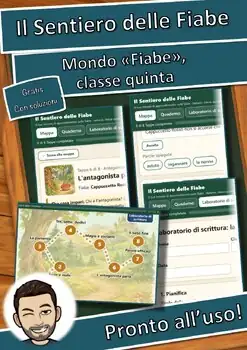

Il Sentiero delle Fiabe: mondo interattivo, 8 stazioni (classe 5) GRATIS
Otto fiabe, otto stazioni, tre livelli: sul Sentiero delle Fiabe gli alunni scoprono in autonomia le caratteristiche della fiaba, sul tablet, sul computer o alla lavagna digitale. Ogni stazione unisce un breve testo a esercizi con risposta immediata. Per ogni livello superato si guadagna una stella sulla mappa.
Contenuto (guida di 16 pagine):
- Mondo di apprendimento nel browser (senza registrazione, senza installazione): il link e il codice QR sono a pagina 1 della guida
- 8 stazioni: l'inizio della fiaba, bene e male, la partenza, i numeri magici, magia e aiutanti, l'antagonista, parole efficaci, il lieto fine
- 3 livelli per stazione (conoscere, applicare, scrivere) e un laboratorio per scrivere la propria fiaba
- Guida con riferimenti alle Indicazioni nazionali, panoramica delle stazioni, tutte le soluzioni, aiuto per la valutazione e idee d'uso
- Schede da stampare: foglio di percorso, le cose da ricordare, inizi di frase e piano di scrittura con lista di controllo
Adatto al lavoro a stazioni, al piano settimanale, alle supplenze e come avvio al laboratorio di scrittura. I progressi restano salvati solo sul dispositivo usato.
Questo materiale è gratuito. Buon viaggio sul Sentiero delle Fiabe! Snice
⭐ Did this resource work well in your classroom? Please leave a quick review on TPT – you earn TPT credits for future purchases, and it helps me a lot! Click "Follow" on my store page to be the first to hear about new freebies.
U.S. STANDARDS (alignment):
- CSTA 1B-AP-08; CSTA 1B-AP-10; CSTA 1B-AP-15; CSTA 1B-IC-18; ACTFL World-Readiness Standards: Interpretive Communication; ACTFL Cultures (Relating Cultural Practices/Products to Perspectives); ACTFL Connections (Acquiring Information and Diverse Perspectives)
- Frameworks: CSTA K-12 Computer Science Standards; ACTFL World-Readiness Standards for Learning Languages
- Also supports the state standards of non-CCSS states, e.g. Texas TEKS (Languages Other Than English, §114); Florida World Languages Standards; Virginia World Language SOL; Indiana World Language Standards; Oklahoma World Languages Standards; Georgia GSE Modern Languages – and the CCSS-based standards of all other U.S. states (please check the exact local code).